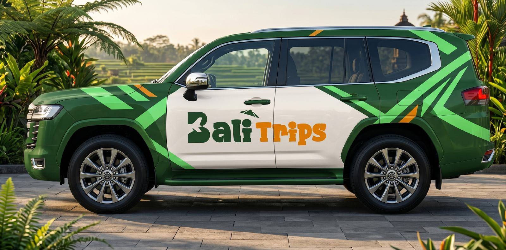

بالي كما لم تكتشفها من قبل
جداول سياحية جاهزة، وخريطة تفاعلية لأماكن مختارة بعناية، وأنشطة تحجزها بخطوات قليلة — من فريق محلي يعرف ما يبحث عنه المسافر العربي.
ماذا تخطط اليوم؟
اختر الخدمة التي تحتاجها وابدأ مباشرة، كل خدمة لها صفحتها الخاصة.


دليل رقمي مصمم لبالي فقط
بدل البحث في عشرات المواقع والتطبيقات، تجمع Bali Trips المعلومات الموثوقة والأماكن المميزة وأدوات التخطيط في تجربة واحدة منظمة — مبنية على خبرة الأستاذ سعيد المحلية في بالي.

ماذا تريد أن تجرّب اليوم؟
اختر نوعًا لترى أماكن مختارة في أنحاء بالي.
احجز التجارب التي تشتهر بها بالي
اختر الباقة، أضف ما تحتاجه، وشاهد السعر النهائي قبل الدفع.
جدول يومي جاهز على جوالك
اشترِ مرة واحدة، حمّل الملف، واحتفظ به طوال الرحلة. كل يوم يوضح الأماكن والتوقيت وطريقة التنقل بينها.
باقات لكل نوع من الرحلات
برامج تجمع الأنشطة والجدول والسائق لعدد أيام محدد.

سيارة خاصة وسائق يعرف بالي
سيارة مكيفة ومناسبة للعائلات بسعر يومي. يتحدد نوع السيارة تلقائيًا حسب عدد المسافرين.
أخبرنا كيف تحب أن تسافر، ونصمم الرحلة حولك
التواريخ وعدد المسافرين والميزانية والاهتمامات — يرد فريقنا بخطة مقترحة وعرض سعر، ولا سعر نهائي قبل موافقتك.
مناطق الجزيرة في لمحة
بكلمات المسافرين أنفسهم
اقرأ قبل أن تسافر
رحلتك إلى بالي تبدأ من هنا
ابدأ بالخريطة، أو اختر جدولًا جاهزًا، أو دعنا نصمم الرحلة كاملة.